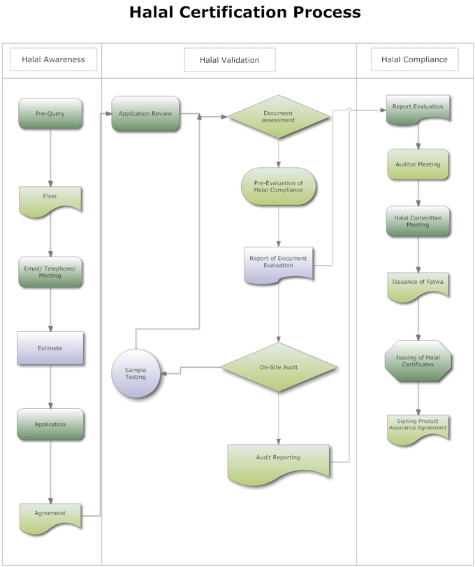

Home
Halal-Zertifizierungsdienste (HCS) ist eine nicht-staatliche, registrierte Zertifizierungsstelle.
Unser Ziel ist es sicherzustellen, dass Muslime verifizierte Halal konsumieren können. Diese Produkte müssen die Vorgaben der islamischen Speisegesetze erfüllen welche im Koran und Sunna niedergelegt sind.
Wir garantieren durch unser professionelles und gut ausgebildetes Team eine authentische und glaubwürdige Zertifizierung.
Unsere technischen und religiösen Experten sind bemüht die höchsten Standards durch strenge Kontrollen durchzusetzen. Damit garantiert unsere Zertifizierung, dass die von uns zertifizierte Produkte auch wirklich Halal konform sind.
HCS wurde vor rund 25 Jahren mit dem Grundgedanken ins Leben gerufen, um den Muslimen weltweit authentisch zertifizierte Halal-Produkte zur Verfügung zu stellen.
ÜBER UNS
Die Idee, Dienstleistungen rund um das Thema Halal anzubieten, entstand 1987 aus Anfragen der muslimischen Gemeinschaft. Es ging darum, Unsicherheiten über die Zulässigkeit einzelner Produkte (im Zentrum standen vor allem Käse und Schokolade) zu klären. Dieser Service wurde später auch zwischenzeitlich vom Islamischen Zentrum in Bern angeboten.
In den letzten Jahren haben sich die Halal Certification Services (HCS) als spezialisiertes Zertifizierungsunternehmen im Markt etabliert. Wir bekommen weltweit Anerkennung und Zustimmung für unsere Evaluation der Halal-Konformität von Konsumgütern.
HCS ist heute eine renommierte und global anerkannte Prüfungs-, Inspektions- und Zertifizierungsstelle. Es ist unser erklärtes Ziel, die Halal-Wahrnehmung kontinuierlich zu verbessern und das Angebot Halal-zertifizierter Produkte „Made in Switzerland“ zu erweitern.
Dienstleistungen
Die Lebensmittel-Technologen und andere relevante Spezialisten der Lebensmittel-, pharmazeutischen und kosmetischen Industrie müssen die kritischen Prozesse und Rohstoffe kennen, die den Halal-Status eines Produktes gefährden können. Die permanente Schulung und Weiterbildung bildet die Grundlage für die erfolgreiche Implementierung eines Halal-Systems.
Die Halal-Zertifizierung ist für die Produzenten und Anbieter ein wichtiges Marketing-Instrument für den Ausbau bestehender und die Erschliessung neuer Marktsegmente. Für die Konsumenten bringt die Halal-Zertifizierung die notwendige Sicherheit, dass die Produkte den Halal-Prinzipien und –Anforderungen entsprechen.
Die zwei wichtigsten Forderungen der Halal-Konformität und der darauf aufbauenden Halal-Zertifizierung sind die Vermeidung der Kreuzkontaminierung und das Sicherstellen der Rückverfolgbarkeit über die gesamte Produktionskette.
Zertifizierung
Halal-Zertifizierung ist ein religiös motivierte, Qualitätszertifizierung von irgendeinem Produkt, das besagt, dass es:
- Zum Verzehr geeignet ist.
- hohe Qualitäts- und hygienischen Anforderungen gerecht wird.
- Ethische und ökologische Aspekte bei der Herstellung beachtet wurden
- Den hohen Anforderungen, wie Sie im Qur’an und Sunnah festgelegt werden, erfüllt.
Lassen Sie uns erklären, warum wir nicht nur vom menschlichen Verzehr reden?
Halal ist ein Lebenskonzept. Wenn wir die Umsetzung in den verschiedenen Lebensaspekten verstehen wollen, müssen wir erkennen, dass es über unser gemeinsames Verständnis von Halal hinausgeht.
Zum Beispiel: Fleisch.
Die Mehrheit weiss, dass Fleisch von einem erlaubten Tier, nur dann erlaubt ist, wenn es gemäss der islamischen Vorschriften geschlachtet worden ist.
Geht man etwas vertiefter in die Materie, dann wird es sehr schnell klar, dass neben der Respektierung der Schlachtungsgebote auch die Fütterung (die Tiere sollten nicht mit gefährlichen oder unerlaubten Mittel gefüttert werden), Tierhaltung, Tiertransport und andere Aspekte des Tierschutzes genau so wichtig sind und während des Zertifizierungsprozesses berücksichtigt werden müssen..
Halal-Zertifizierung ist eine freiwillige Zertifizierung und bescheinigt dem zertifiziertem Produkt, das es im Einklang der Islamischen Gesetze gehandhabt wurde.
Einige muslimische Länder machen es zur Vorbedingung, dass importierte Ware im Herstellungsland von einem lokalen, vertrauenswürdigem islamischen Organ zertifiziert werden müssen.
In Länder, wo es keine Vorbedingung ist, ist die Zertifizierung ein nützliches und geschätztes Marketingisntrument für die Unternehmen und zusätzlich eine vertrauensbildende Massnahme für die Konsumenten, welche mit wachsender Besorgnis nach steigendener Lebensmittelqualität und -sicherheit Ausschau halten.
Vorteile für die Verbraucher:
Ein Produkt, das von einer islamischen Zertifizierungsinstanz geprüft und für Halal befunden wurde, ist mit einem Gütesiegel als Halal-zertifiziertes Produkt ausgezeichnet. Damit hat der Konsument/die Konsumentin die Gewissheit, dass eine gründliche Analyse aller verwendeten Rohstoffe und Zutaten gemacht und das Produkt gemäss den strengen Halal-Normen hergestellt wurde.
Vorteile für die Hersteller:
- Die unabhängige Halal-Zertifizierung ist für die pflichtbewussten muslimischen Konsumenten/Konsumentinnen eine wertvolle und wichtige Qualitätsinformation.
- Neben der Überprüfung der Zutaten, der Zubereitung, der Lagerung und der Verarbeitung, werden auch das Produkt und die hygienischen und sanitären Massnahmen durch den Experten sorgfältig inspiziert. Der gesamte Herstellungsprozess ist damit Gegenstand einer gründlichen Inspektion und Überprüfung. Die Vertraulichkeit bleibt selbstverständlich gewahrt.
Sobald ein Produkt gemäss unseren Richtlinien das Halal-Zertifikat erlangt hat, bekommt der Hersteller die Erlaubnis, das HCS Halal-Gütesiegel auf der Verpackung oder dem Etikett anzubringen. Diese wertvolle Auszeichnung zeigt, dass das Produkt ein authentisches HCS Halal-zertifiziertes Produkt gemäss der höchsten Qualität und global anerkannten Halal-Zertifizierung ist.
Fazit
- Die Halal-Zertifizierung ermöglicht den Marktzugang zu einem Viertel der Weltbevölkerung. Das ist eine gewinnbringende Exportgelegenheit für jeden Hersteller. Der Halal-Markt wird derzeit auf einen Wert von USD 300 Milliarden geschätzt.
- Mit der Halal-Zertifizierung, die auf einer freiwilligen Basis erfolgt, wird gegenüber Unternehmen ohne Halal-Konformität ein signifikanter Wettbewerbsvorteil errungen.
- Die Halal-Zertifizierung setzt im Sinne einer Ergänzung des bestehenden HACCP-Programms strenge persönliche Hygieneanforderungen zusätzlich zu der bestehenden Hygienepraxis im Unternehmen voraus.
Certification Procedure
Schulungen
Wir nahmen diese Herausforderung gerne an und haben eine zweistündige Lektion gestaltet, um den Studenten die kritischen Punkte der Halal-Nahrungsmittelproduktion näher zu bringen.
Die sehr gute Akzeptanz durch die Lehrkräfte und Studenten hat uns motiviert, diese Lektion kontinuierlich zu verbessern und auszubauen. Sie wird dieses Jahr bereits zum dritten Mal stattfinden.
Unser Ausbildungsmodul zeigt den Studierenden die grundlegenden Anforderungen an die Halal-Lebensmittelproduktion und befähigt sie, die Umsetzung der Norm in der Lebensmittelindustrie zu verstehen.
Ausgehend von den Begriffsdefinitionen „Erlaubt (Halal)“ und „Verboten (Haram)“ verweisen wir auf die Quellen der Gebote in Qur'an und Sunnah und erklären die Voraussetzungen, die ein Rohstoff zu erfüllen hat. Ein weiterer Schwerpunkt sind die Anforderungen an die Beschaffung und Lagerung der Rohstoffe und Halbfabrikate, an die Herstellung, Kennzeichnung und an den Transport der Produkte.
Studenten sind ein wertvolles Humankapital für die Zukunft der Halal-Industrie. Sie kann von ihrem Wissen über die Anforderungen an die Halal-Produktion profitieren und mit ihrer Hilfe die Halal-Richtlinien effektiv umsetzen.
Unser Schulungsprogramm ist eine starke Säule unser Halal-Dienstleistungen. Es wird zurzeit an drei Fachhochschulen in der Schweiz und fünf Fachhochschulen in Deutschland mit Lebensmitteltechnologie als Studienfach eingesetzt.
Halal Produktion
Die Halal-Produktion wird zu einer echten Herausforderung, wenn die Halal-Produktion in den gleichen Räumlichkeiten wie die Haram-Produktion (Nicht-Halal) realisiert werden muss. Diese Produktion muss durch eine anerkannte islamische Zertifizierungsstelle mit Niederlassung im entsprechenden Land permanent kontrolliert und überwacht werden.
Die Hersteller müssen neben der Wahrnehmung der relevanten technischen und wirtschaftlichen Aspekte auch die kulturellen und religiösen Gefühle der Verbraucher respektieren.
Requirement for Food Production
Die zwingende Voraussetzung für ein Halal-Produkt ist eine durchgängige und geschlossene Wertschöpfungskette. Von der Beschaffung, Lieferung, Lagerung, Zubereitung, Produktion, Verpackung, Kennzeichnung bis zum Versand muss jeder Schritt die Halal-Konformität des Produktes nachvollziehbar garantieren.
Die Halal-Produktion wird zu einer echten Herausforderung, wenn die Halal-Produktion in den gleichen Räumlichkeiten wie die Haram-Produktion (Nicht-Halal) realisiert werden muss. Diese Produktion muss durch eine anerkannte islamische Zertifizierungsstelle mit Niederlassung im entsprechenden Land permanent kontrolliert und überwacht werden.
Die Hersteller müssen neben der Wahrnehmung der relevanten technischen und wirtschaftlichen Aspekte auch die kulturellen und religiösen Gefühle der Verbraucher respektieren.
Rohstoffe
Tierische Rohstoffe:
- Rohstoffe von Tieren sind nur dann erlaubt (Halal), wenn sie von Tieren stammen, die erlaubt und gemäss islamischem Recht geschlachtet worden sind. Meerestiere sind eine Ausnahme. Diese müssen nicht geschlachtet werden.
- Die folgenden Rohstoffe von Tieren sind unzulässig und verboten(Haram): Fleisch und Nebenprodukte von verendeten Tieren (Kadaver), Blut und Nebenprodukte aus Blut, Fleisch und Nebenprodukte vom Schwein, Das Fleisch und Nebenprodukte von Tieren, die nicht zugelassen sind oder nicht Halal-konform geschlachtet wurden, Das Fleisch von Wild- und Raubtieren und Wildvögel mit Krallen ist ebenfalls verboten.
- Die bei der Herstellung von Lebensmitteln verwendeten Rohstoffe von Tieren müssen von erlaubten Tieren stammen, die Halal-konform geschlachtet worden sind und über ein Halal-Zertifikat verfügen.
Pflanzliche Rohstoffe:
- Pflanzliche Rohstoffe sind erlaubt, solange keine Gärung stattfindet und keine zweifelhaften Zusatzstoffe vor und/oder während des Produktionsprozesses eingesetzt worden sind. Diese Anforderungen müssen unbedingt beachtet werden.
- Alkohol in irgendeiner Form oder Konzentration ist verboten.
Zabihah – Das islamische Schlachten
- Das islamische Schlachten ist ein Reinigungsakt. Da Blut verboten ist, soll es mit der Schlachtung grösstenteils ausfliessen.
- Die islamische Schlachtung hat zum Ziel, Tiere in einer möglichst respektvollen, schnellen und schmerzfreien Weise zu töten
- Die Schlachtung muss im Namen Gottes, dem Schöpfer allen Lebens erfolgen. Damit bittet der Schlachter Gott um Rechtsleitung.
- Während des Schlachtprozesses müssen die Arterien, Venen und die Luftröhre des Tieres durchtrennt werden, damit möglichst viel Blut abfliesst. Das Rückenmark darf erst durchtrennt werden, wenn die Enthäutung des Tieres beginnt.
- Jede/r vernünftige praktizierende/r Muslim/a, der/die das islamische Gesetz versteht und befolgt, kann die Schlachtung vornehmen. Jede/r, die/der den Prozess beherrscht und das in richtiger Weise ausführt, darf die Schlachtung vornehmen.
- Die islamische Schlachtung ist ein Reinigungsprozess, bei dem das Tier im Namen Gottes geschlachtet und von unreinem Blut gereinigt wird, bevor es konsumiert werden kann. Meerestiere sind schon Halal und müssen nicht geschlachtet werden.
- In vielen Ländern Europas ist das religiöse Schlachten verboten. Daher müssen Rohstoffe von Tieren für die Halal-Lebensmittel- und Nahrungsergänzungsproduktion aus dem Ausland importiert werden. Diese Rohstoffe müssen immer über ein gültiges Halal-Zertifikat verfügen, ausgestellt von einem autorisierten und global anerkannten und akzeptierten islamischen Institutionellen im jeweiligen Land
Halal Produkte
Halal-Produkte sind:
- Produkte, hergestellt mit zertifizierten Halal-Rohstoffen und Halal-konformen Ausrüstungen.
- Produkte aus von Tieren stammenden Rohstoffen, die gemäss islamischem Recht erlaubt und als „rein“ gelten, und aus Tieren, die Halal-konform geschlachtet wurden.
- Produkte, die Fische oder andere Meeresfrüchte enthalten oder daraus produziert werden, sind grundsätzlich Halal, solange Sie für die menschliche Gesundheit nicht schädlich sind. Fische und andere Meeresfrüchte werden im Islam als "rein" deklariert.
- Produkte, die keinen Alkohol enthalten.
- Produkte, die aus pflanzlichen Rohstoffen gewonnen wurden. Pflanzliche Rohstoffe gelten grundsätzlich als Halal, sofern sie für den Konsum nicht schädlich sind und noch keine Gärung eingesetzt hat.
Erhaltung des Halal-Status
- Um den Halal-Status zu erhalten, müssen die Produkte auf klar bezeichneten Produktionslinien verarbeitet werden (getrennte Produktionslinien sind erforderlich, wenn gleichzeitig „unreine“ und „verbotene“ Stoffe im gleichen Produktionsbetrieb hergestellt werden).
- Eine Produktionslinie kann nur einmal in den Halal-Status gebracht werden.
- Ein regelmässiger Wechsel von „schmutzig“ oder „unrein“ (Haram) zu „sauber“ (Halal) und umgekehrt, erfüllt die Halal-Anforderungen nicht und ist nicht erlaubt. Diese Regel gilt auch für die verwendeten Gebrauchsgegenstände.
- Die klare Absicht, Halal zu produzieren, muss immer erkennbar sein. Bei jeder Produktionsänderung (z.B. Rohstoffe oder Verfahren) muss immer die Zertifizierungsstelle konsultiert werden.
Halal Erklärt
Die nachfolgenden Erläuterungen der wichtigsten Begriffe sollen Ihnen helfen, das Halal-Konzept besser zu verstehen. Die vorhandenen Einschränkungen werden für Sie nachvollziehbar.
Ergänzend finden Sie auch die jeweiligen Referenzen aus dem heiligen Qur'an und Hadith, die Ihnen helfen, das Konzept von Halal und Haram besser zu verstehen. Zusammen mit der Erläuterung der wichtigsten Begriffe sind Sie in der Lage, mit Ihrem Halal-Dienstleister auf gleichem Niveau zu kommunizieren.
Wir haben auch eine Liste häufig genannter verbotener Inhalte/Zutaten/Produkte (Haram) zum Download bereitgestellt.
What is Halal?
When we go through what is lawful and permitted to humans, we evidently come across the words “Halal” and “Good”. Halal (حَلاَلً , ḥalāl , Halaal) is an Arabic term designating any object or an action which is permissible to use or engage in, according to Islamic law. The term is widely used to designate food seen as permissible according to Islamic law (Sharia).
Interestingly nowhere in quran does it state that it is permissible only for muslims, rather all human-beings are invited to eat food which is halal (permissible, lawful), pure and good for health. That means it is hygienically and toxicologically free from all sorts of hazardous agents, and hence is good and safe for consumption.
Was Ist Haram
Haram (arabisch: حرام) (auch Haraam) ist ein arabischer Begriff und bedeutet "verboten". Als Haram wird alles angesehen, was gemäss islamischer Rechtsprechung verboten ist. Das Gegenteil ist Halal.
Der religiöse Begriff Haram kann für folgendes verwendet werden:
- Bestimmte Verhaltensweisen wie Ehebruch oder Missbrauch.
- Bestimmte Lebensmittel oder Lebensmittelzutaten wie Alkohol oder Schweinefleisch
- Für Lebensmittel oder Gegenstände, die eigentlich Halal wären, welche aber in eine oder andere Weise manipuliert wurden ( so z.B. Fleisch von einem Tier, das nicht rechtens geschlachtet wurde).
- Bestimmte Objekte
- Unrechtmässig durch Sünde erworbener Reichtum. Beispiele sind mit Betrug, Diebstahl, Korruption oder Mord erworbenes Geld. Für einen guten Muslim ist es unrechtmässig, mit solchen Mitteln Reichtum zu erlangen. Jeder Muslim, der von Leistungen oder Reichtum lebt, die mit verbotenen Mittel generiert wurden, ist kein richtiger Muslim.
Wichtige Begriffe
"Haram" beschreibt hingegen alles, was nach islamischem Recht "unzulässig" oder "verboten" ist.
Mit "Najs" werden Stoffe differenziert, die von ihrer Herkunft als "unrein" gelten und die nicht gereinigt werden können.
"Mashbooh" bedeutet "fragwürdig“ und wird für Materialien verwendet, deren Status unklar ist. Falls Lebensmittel fragwürdige oder unzulässige (Haram) Zutaten enthalten, wird vom Konsum ganz abgeraten.
Als „Makruh“ gilt alles, was „verpönt“ und „unbeliebt“ ist. Die Vermeidung wird belohnt, aber es ist nicht ausdrücklich verboten. Auch diese Grauzone (zwischen erlaubtem und verbotenem) gilt es für die Muslime vorsichtshalber zu meiden
"Tayyeb" gleichbedeutend mit "Reinheit" und "Qualität" beinhaltet alles, was sicher und gesund ist.
Muslime werden von ihrer Religion dazu angehalten, nur Halal und Tayyeb zu konsumieren.
So ist die Mehrheit der Lebensmittel als "Halal" anzusehen, solange sie keine zweifelhaften oder nicht erlaubten Zutaten enthalten.
Glossar
Ahlul Kitab (Volk des Buches)
Ein Begriff aus dem Koran. Er bezieht sich auf die Menschen, die göttlichen Schriften erhalten und ist eine Referenz an die Christen und die Juden.
ALLAH
Der Eigenname Gottes, des Schöpfers. Allah ist ein einziges Wesen ohne Partner.
Antioxidant
Verbindungen, verzögern oder verhindern die Oxidation von Lebensmitteln. Beispiele sind BHA, BHT und Zitronensäure.
BHA
Butyliertes Hydroxyanisol. Es ist ein Antioxidans. BHA ist Halal.
BHT
Butyliertes Hydroxytoluol. Es ist ein Antioxidans. BHT ist Halal.
Carrageenan
Eine von Irish Moss, die ein Gel in Lebensmitteln Systeme Formen zu extrahieren. Es ist als Lebensmittelzusatzstoff verwendet. Carrageen wird Halal.
Kasein
Die wichtigsten Eiweiß in der Milch. Es ist in der Herstellung von Käse am eingesetzt. Es kann sein, Halal oder Haram, je nach dem verwendeten Enzym um es zu produzieren.
Kakaomasse
Ein semi-viskosen süßen Sirup mit Schokolade, Zucker und weiteren Zutaten. Es ist bei der Herstellung Süßigkeiten, Getränken und anderen Lebensmitteln Schokoladengeschmack. Kakaomasse ist nicht-alkoholische und Halal, es sei denn, eine Kontamination mit haram Zutaten.
Klärmitteln
Eine Gruppe von chemischen Verbindungen in flüssigen Lebensmitteln zur Entnahme von Trübungen durch Schwebstoffe.
Weinstein
Ein weißes, kristallines Chemikalie namens Kalium bitartarate.
Kulturen
Mehrere Bakterien und andere Mikroben einzeln oder in Kombination, Gärung in mehreren Lebensmittel zu bringen. Sie sind in der Herstellung von fermentierten Milch, Käse und fermentierten Fleischprodukten eingesetzt.
Diglyceriden
Fettstoffen, Glycerin und zwei Fettsäuren. Diglyceriden kann aus tierischen oder pflanzlichen Fetten hergestellt werden, und sie sind als Emulgator in Lebensmitteln verwendet werden. Wenn von Halal Tieren in der islamischen oder aus pflanzlichen Quellen geschlachtet, sind sie Halal. Ansonsten sind sie haram. Derzeit ist es am besten, für Produkte mit nur 100% pflanzlich Diglyceride aussehen.
Emulgatoren
Eine chemische Substanz, die Fette hält (oder Öle), dispergiert in Wasser oder Wasser dispergiert in Fetten (oder Öle). Emulgatoren sind in Lebensmitteln, die sowohl Fette (oder Öl) und Wasser verwendet. Beispiele für Emulgatoren sind Lecithin und Mono-und Diglyceride. Emulgatoren können aus tierischen oder pflanzlichen Quellen hergestellt werden. Wenn von Halal Tieren in der islamischen oder aus pflanzlichen Quellen geschlachtet, sind sie Halal. Ansonsten sind sie haram.
Enzymes
Eiweißstoffe gefunden und ausgebildet in allen lebenden Zellen. Sie bewirken chemische Reaktionen innerhalb und außerhalb des Körpers, ohne selbst verbraucht wird. Sie werden von Tieren oder Mikroorganismen gewonnen und sind in der Lebensmittelindustrie verwendet
Industrie zur Herstellung von Käse und anderen Produkten. Wenn von Halal Tieren in der islamischen geschlachtet, aus pflanzlichen Quellen oder aus Mikroorganismen hergestellt, sie sind Halal. Ansonsten sind sie haram. Derzeit ist es am besten für die mikrobielle Enzyme zu suchen.
Fatwa
Religionsedikte
Gelatin
Eine abgeleitete Protein tierischen Ursprungs. Es wird aus den Schalen, Knochen und Bindegewebe hergestellt und verwendet in Desserts und als Zusatzstoff in einer Vielzahl von Lebensmitteln. Wenn von Halal Tieren in der islamischen geschlachtet wurde, ist es Halal. Ansonsten ist es haram. Sofern ein Produkt mit Gelatine Halal zertifiziert ist oder sagt Halal Gelatine, ist es sehr wahrscheinlich haram und sollte vermieden werden.
GHP
Gute Hygienepraxis
GMF
Gentechnisch veränderte Lebensmittel (GMF) sind Lebensmittel aus genetisch veränderten Organismen. Gentechnisch veränderte Organismen haben bestimmte Veränderungen in ihrer DNA durch gentechnologische eingeführt hatte, mit einem Prozess der entweder Cisgenesis oder Transgenese. Diese Techniken sind sehr viel präziser als Mutagenese (Mutationszüchtung) wenn ein Organismus einer Strahlung ausgesetzt ist oder Chemikalien zu einer unspezifischen, aber stabile Veränderungen zu schaffen. Andere Techniken, durch die Menschen ändern Nahrungsmittel Organismen enthalten selektive Zucht (Pflanzenzucht und Tierzucht) und somaklonale Variation.
GVO
Ein gentechnisch veränderter Organismus (GVO) oder gentechnisch veränderter Organismen (GEO) ist ein Organismus, dessen genetisches Material verändert wurde mit Hilfe gentechnischer Methoden.
GMP
Good Manufacturing Practices sind Richtlinien, die einen Überblick über die Aspekte der Herstellung und Prüfung, dass die Qualität eines Produktes beeinflussen können
Hadith
Hadith sind Erzählungen aus den Worten und Taten des islamischen Propheten Mohammad (Friede sei mit ihm). Hadith sind von den traditionellen Schulen der Rechtsprechung als wichtiges Werkzeug für das Verständnis des Koran und in Fragen der Rechtsprechung angesehen.
Halal
Das arabische Wort "Halal" bedeutet, dass die "rechtmäßig" für den Verzehr durch den Menschen.
Hanafi
Einer der islamischen Schule des Denkens von Imam Abu Hanifa gegründet. Unter den vier etablierten sunnitischen Schulen des juristischen Denkens im Islam, ist der Hanafi Schule die älteste. Es hat einen guten Ruf für die stärkere Betonung auf die Rolle der Vernunft und als etwas liberaler als die anderen drei Schulen.
Die Hanafi Schule hat auch die meisten Anhänger unter den vier großen sunnitischen Schulen. (Sowohl das Osmanische Reich und das Mogulreich waren Hanafi so der Hanafi Schule immer noch weit verbreitet ist in ihrer ehemaligen Ländereien).
Heute ist die vorherrschende Hanafi Schule unter den Sunniten in Zentralasien, Afghanistan, Pakistan, Bangladesch, Indien, China sowie im Irak, Mauritius, Syrien, Türkei, Albanien, Bosnien, Kosovo, Mazedonien auf dem Balkan und im Kaukasus. Es ist auch in großer Zahl in anderen Teilen der muslimischen Welt folgten.
Hanbali
Hanbali ist eine der vier Schulen Madh'habs (Riten) des Fiqh oder religiösen Rechts im sunnitischen Islam. Die Rechtsprechung der Schule wurde von den Schülern von Imam Ahmad bin Hanbal gestartet.
Hanbali Rechtsprechung ist auf der Arabischen Halbinsel beliebt.
Haram
"Haram" bedeutet "rechtswidrig" oder "verboten" nach islamischem Recht.
Ijma’
Ijma 'ist ein arabischer Begriff, der sich ideal, um den Konsens der Ummah (die Gemeinschaft der Muslime oder Anhänger des Islam).
Schmalz
Eine gesättigte Fett vom Schwein. Es ist in Frittieröl und Backwaren verwendet. Schmalz ist haram und alle Produkte mit Schmalz haram sind.
Lecithin
Ein Emulgator aus Glycerin besteht, zwei Fettsäuren, Phosphorsäure und Cholin. Es wird aus Eigelb, Soja oder tierische Fette extrahiert. Wenn von Halal Tieren in der islamischen geschlachtet, aus pflanzlichen Quellen oder Eigelb gemacht, ist es Halal.
Ansonsten ist es haram. Am besten ist es, Produkte zu Halal zertifiziert sind oder enthalten pflanzliches Lecithin oder Sojalecithin Stick.
Makruh
was makruh ist eine Abneigung oder beleidigend wirken (wörtlich "gehasst"). Obwohl es nicht haram (verboten) und daher nicht eine Sünde, eine Person, die von dieser Maßnahme wird belohnt verzichtet. Muslime sind aufgefordert, solche Aktionen, wenn möglich zu vermeiden. Dies ist eine der Grad der Zustimmung (ahkam) im islamischen Recht.
Maliki
Die Maliki Madhhab ist eine der vier Schulen des Fiqh oder religiösen Rechts im sunnitischen Islam.
Es ist die drittgrößte der vier Schulen, die von ca. 15% der Muslime, vor allem in Nordafrika, Westafrika, Vereinigte Arabische Emirate gefolgt, und einige Teile von Saudi-Arabien.
Mashbooh
Eine arabische Wort für Verdächtige oder fraglich. Mashbooh Begriffe können von Halal oder Haram Quellen erzeugt werden. Wenn die spezifische Quelle nicht bekannt ist, werden die Elemente verdächtigen oder fraglich.
Monoglycerides
Fettstoffen, Glycerin und einer Fettsäure. Monoglyceride aus tierischen oder pflanzlichen Fetten hergestellt und sind als Emulgatoren in Lebensmitteln eingesetzt. Wenn von Halal Tieren in der islamischen oder aus pflanzlichen geschlachtet gemacht
Quellen, sie sind Halal. Ansonsten sind sie haram. Derzeit ist es am besten, für Produkte mit nur 100% pflanzlich Diglyceride aussehen.
Najs
"Najs" Was Lebensmittel, die sich selbst als "unrein" sind und das kann nicht gereinigt werden. Es gibt 3 Differenzierungen:
Najs Mughallazah = Schwere Dreck
Najs Mukhaffafah = Light Dreck
Najs Mutawassitah = Mittel Dreck
Pepsin
Ein Enzym extrahiert aus tierischen Mägen, vor allem Schwein Mägen, und verwendet bei der Herstellung von Käse. Pepsin ist haram.
Koran
Die göttliche Offenbarung an den Propheten Muhammad, Allahs Frieden und Segen Allahs seien auf ihm. Der Koran ist die Quelle der Weisheit und Recht für die Muslime.
Lab
Ein Enzym extrahiert aus dem 4. Magen von Kälbern und verwendet bei der Herstellung von Käse. Wenn die Kälber in der islamischen Weg geschlachtet werden, ist es Halal. Ansonsten sollte vermieden werden. Mikrobielle Lab ist Halal.
Shafie
Die Shafi'i Schule des Fiqh ist nach Imam asch-Schafi'i benannt. Die Shafi'i Schule ist das ganze Ummah gefolgt und ist die offizielle Madhab der traditionsreichsten Gelehrte und führende sunnitische Behörden. Es ist auch als offizieller Madhab durch die Regierungen von Brunei Darussalam und Malaysia anerkannt. Darüber hinaus nutzt die Regierung von Indonesien dieser Madhab für die indonesische Zusammenstellung der Scharia.
Es ist das beherrschende Madhab von Syrien, Palästinensische Gebiete, Libanon,
Reinheit Der Absicht
Im Islam wird jede Handlung einer Person als Teil einer ganzen Gemeinschaft angesehen und hängt ab von der Reinheit seiner Absicht, die vor Tätigkeitsbeginn ausgesprochen werden muss. Es ist äusserst wichtig, den Namen Gottes vor jeder Handlung anzurufen, um seine Rechtsleitung zu erhalten. Das Ausrufen und die Erfüllung dieser Pflicht gegenüber Allah hat die höchste Priorität für jeden Muslim. Alle Taten werden so vollbracht, dass mögliche und/oder erwartete Fehler vollständig vermieden werden können.
Es ist daher von grösster Bedeutung, dass alle im Produktionsprozess und/oder im Umgang mit den Halal-Produkten beteiligten Personen diese strengen Anforderungen erfüllen und alle notwendigen Vorkehrungen dazu treffen.
Please leave a message:
Our Office Address
Cesar-Stünzi-Strasse 13
79618 Rheinfelden
Germany
Email: info@halalcs.eu
Kontaktadresse
Kontaktadresse
Halal Certification Services (EU) GmbH
Cesar-Stünzi-Strasse 13
79618 Rheinfelden
Germany
info@halalcs.eu
Vertretungsberechtigte Personen
Farhan Tufail, Geschäftsführer
Handelsregistereintrag
Eingetragener Firmenname: Halal Certification Services (EU) GmbH
Nummer: HRB 713367
Handelsregisteramt: Freiburg i. Br.
Mehrwertsteuernummer
DE304324101
Haftungsausschluss
Der Autor übernimmt keinerlei Gewähr hinsichtlich der inhaltlichen Richtigkeit, Genauigkeit, Aktualität, Zuverlässigkeit und Vollständigkeit der Informationen.
Haftungsansprüche gegen den Autor wegen Schäden materieller oder immaterieller Art, welche aus dem Zugriff oder der Nutzung bzw. Nichtnutzung der veröffentlichten Informationen, durch Missbrauch der Verbindung oder durch technische Störungen entstanden sind, werden ausgeschlossen.
Alle Angebote sind unverbindlich. Der Autor behält es sich ausdrücklich vor, Teile der Seiten oder das gesamte Angebot ohne gesonderte Ankündigung zu verändern, zu ergänzen, zu löschen oder die Veröffentlichung zeitweise oder endgültig einzustellen.
Haftung für Links
Verweise und Links auf Webseiten Dritter liegen ausserhalb unseres Verantwortungsbereichs Es wird jegliche Verantwortung für solche Webseiten abgelehnt. Der Zugriff und die Nutzung solcher Webseiten erfolgen auf eigene Gefahr des Nutzers oder der Nutzerin.
Urheberrechte
Die Urheber- und alle anderen Rechte an Inhalten, Bildern, Fotos oder anderen Dateien auf der Website gehören ausschliesslich der Firma Halal Certification Services (EU) GmbH oder den speziell genannten Rechtsinhabern. Für die Reproduktion jeglicher Elemente ist die schriftliche Zustimmung der Urheberrechtsträger im Voraus einzuholen.
Datenschutz
Gestützt auf Artikel 13 der schweizerischen Bundesverfassung und die datenschutzrechtlichen Bestimmungen des Bundes (Datenschutzgesetz, DSG) hat jede Person Anspruch auf Schutz ihrer Privatsphäre sowie auf Schutz vor Missbrauch ihrer persönlichen Daten. Wir halten diese Bestimmungen ein. Persönliche Daten werden streng vertraulich behandelt und weder an Dritte verkauft noch weiter gegeben.
In enger Zusammenarbeit mit unseren Hosting-Providern bemühen wir uns, die Datenbanken so gut wie möglich vor fremden Zugriffen, Verlusten, Missbrauch oder vor Fälschung zu schützen.
Beim Zugriff auf unsere Webseiten werden folgende Daten in Logfiles gespeichert: IP-Adresse, Datum, Uhrzeit, Browser-Anfrage und allg. übertragene Informationen zum Betriebssystem resp. Browser. Diese Nutzungsdaten bilden die Basis für statistische, anonyme Auswertungen, so dass Trends erkennbar sind, anhand derer wir unsere Angebote entsprechend verbessern können.Error! Filename not specified.